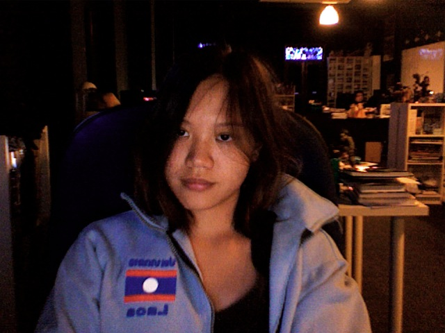
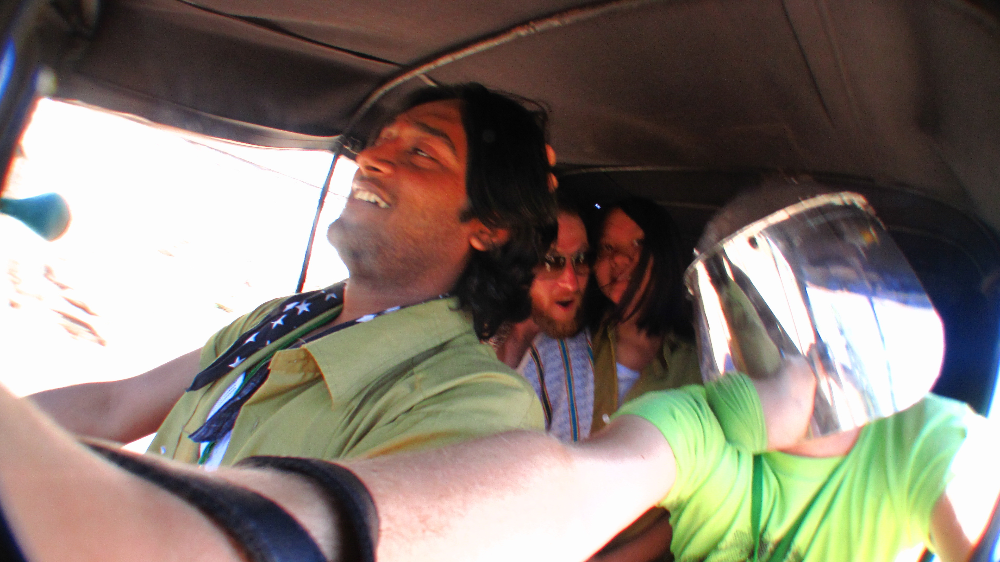
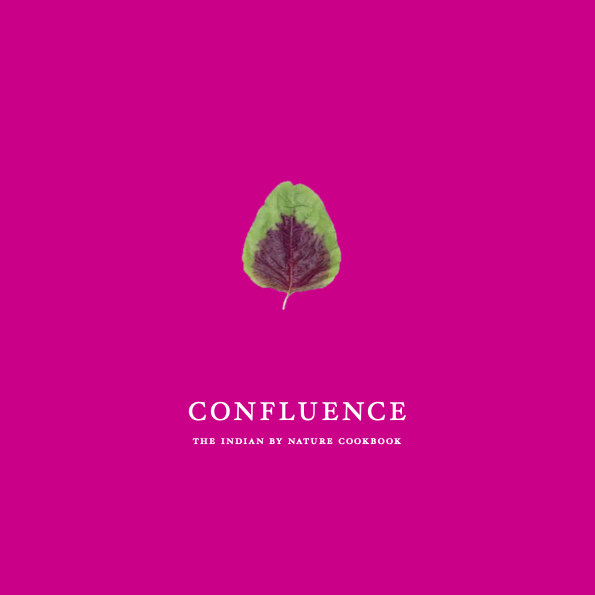
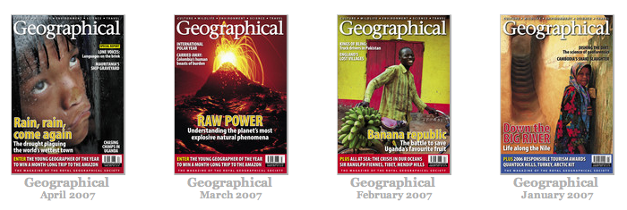
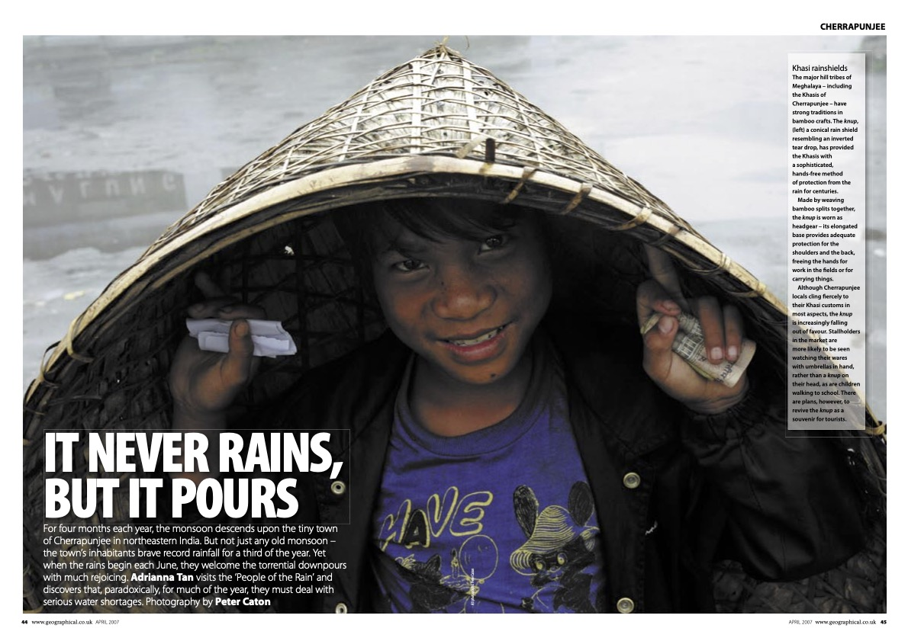
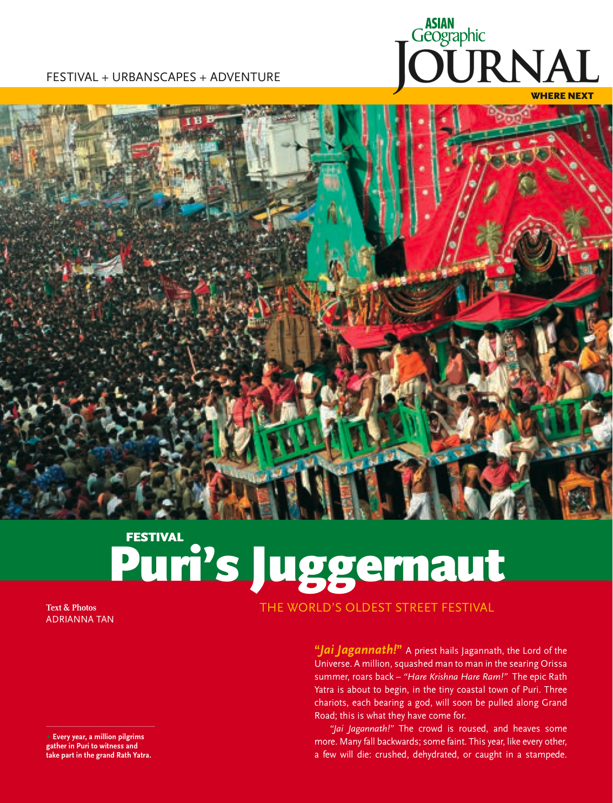
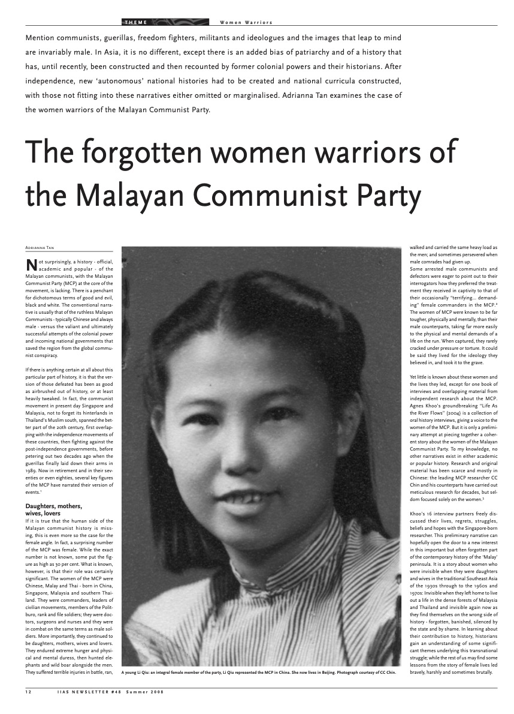
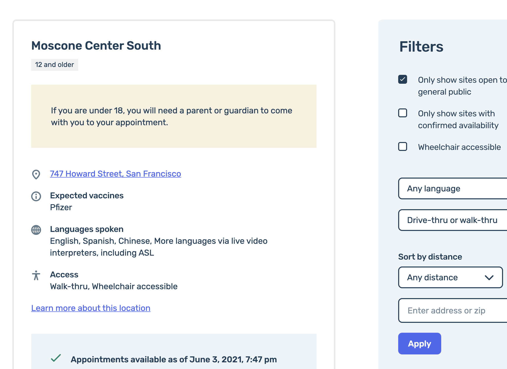
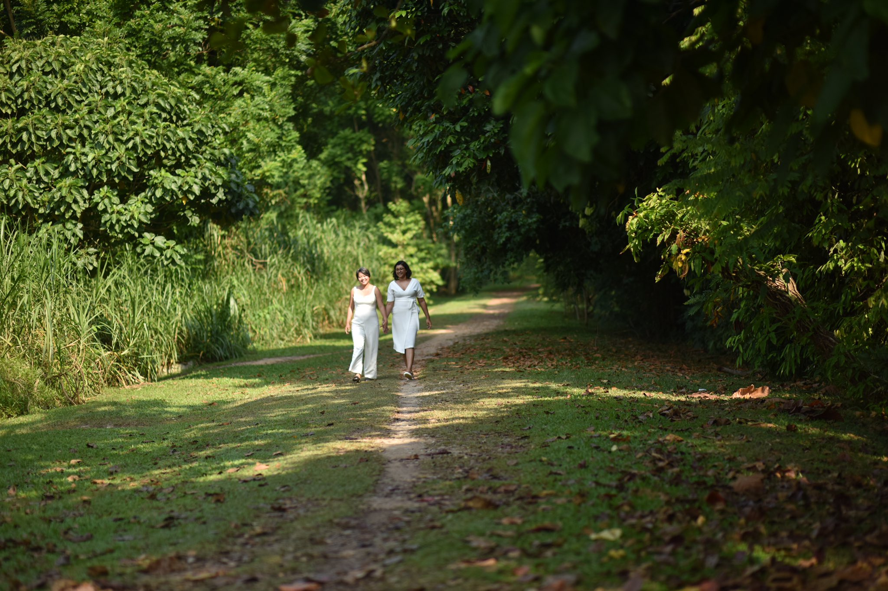

<!doctype html>
<html>
	<head>
		<meta charset="utf-8">
		<meta name="viewport" content="width=device-width, initial-scale=1.0, maximum-scale=1.0, user-scalable=no">

		<title>My unusual journey to government</title>

		<link rel="stylesheet" href="dist/reset.css">
		<link rel="stylesheet" href="dist/reveal.css">
		<link rel="stylesheet" href="dist/theme/solarized.css">

		<!-- Theme used for syntax highlighted code -->
		<link rel="stylesheet" href="plugin/highlight/monokai.css">
	</head>
	<body>
		<div class="reveal">
			<div class="slides">
				<!-- Use external markdown resource, separate slides by three newlines; vertical slides by two newlines -->
				<section data-markdown data-separator="---">
					<script type="text/template">
				## An unusual journey 

				Through technology and the world
				---
				Growing up neurodivergent in Singapore, I was interested in everything. 

				

				---
				### Things I thought I'd do for a living
				* Play the clarinet 
				* Take photos
				* Write
				* Travel
				* Run
				* Build computers
				* Create potato chips flavors
				* Make ice cream

				I ended up doing most of these. 
				---
				I do **nothing** in moderation.
		
				---
				

				Asking a fortune teller in Turkey what I was going to do with my life. He told me to be a fortune teller.

				---
					

				Driving 3000km around South India just for fun.
				---
					

				Edited and photographed at least two cookbooks and several travel guidebooks.
				---
				<div class="r-stack">
					"I want to do everything that interests me."
					
					
					
					
					
				</div>

			
				---
				<section data-background-iframe="https://www.youtube.com/embed/ACjIDnX8rPo"
				data-background-interactive>

</section>
				---
  ## Why live like this?

				---

				Most people on the autism spectrum grow up feeling like an alien. "Waiting for aliens to come and take me somewhere I belong," is a common thing we say.

				--- 
				It's hard to have a 'normal career'. Sometimes, a career at all. I knew from the beginning that I would not ever fit in, so I had to make my own path.
				---
				I don't know what 'hard' is. 

				'Not hard' is 'mindnumbingly boring'.
				
				---
				### Start with what

				I identified some common themes. As long as I didn't veer too far off, I figured I would be okay.
				---
				### What

				1. Something with computers
				2. Some amount of travel 
				3. Some kind of 'hard' problem
				4. **Preferably delicious**
				5. Not evil
				6. Something that helps somebody
				

				---
				### How

				"weird", "hyper-focused on specific things with little commonality", "doesn't follow through", "does too little", "does too much"

				---

				The nice thing about being autistic is you can hear what people think about you, because they tell you, but you don't actually know what it means. /s

				--- 
				### Why

				Because I can.
				
				So my career began.

				---
				### 2007 
				
				Bored in college. Started traveling, started travel writing and travel photography. Started web consulting for agencies and startups.

				---

				### 2008

				Graduated. Moved to Dubai. Ate at El Bulli. Photographed and wrote a cookbook for a hotel. 
				---
				### 2009

				Published a travel guidebook. Traveled to Yemen. Traveled overland from Beirut to London. Decided to set down roots in Kuala Lumpur. Got a dog. Started an ice cream business. Started a tech company to support ice cream business.
				---
				### 2010 

				Made games, apps, websites. And ice cream. Lots of consulting.
				---
				### 2012

				Started a [non-profit](https://gyanada.org) in India. 

				--- 
				### 2013

				Started at Uber. Found it broke my 'no evil' rule. Left. Lots of consulting, including in Myanmar and Indonesia.

				---
				### 2014

				Started a fintech startup in Indonesia.

				---
				### 2014-2018

				<iframe src="https://giphy.com/embed/q6RoNkLlFNjaw" width="480" height="480" frameBorder="0" class="giphy-embed" allowFullScreen></iframe><p><a href="https://giphy.com/gifs/cat-q6RoNkLlFNjaw">Running a startup</a></p>

				---
				### 2018

				Moved to San Francisco. Became senior product manager at a hot new database company.
				---
				### 2019

				Became the Director of Product Management for the City and County of San Francisco.

				---
				### 2020

				Built more 'pandemic software' than I imagined possible.

				---
				### 2021
				
				My calling in life? Maybe not (I still want to make potato chips), but it's close.

				---
				### Now: 
				
				I want to do fewer (but still several) things at once, but better.

				--- 

				### Foundational work 

				My pride and joy is the [non-profit](https://gyanada.org) I helped to start in 2012, which is thriving. 
				---

				<section data-background-video="assets/jharkhandsinging.mp4"></section>
				
				---
				### Software work

				I've been involved in:

				* Giving millions of dollars away to San Franciscans
				* Making it easier for San Franciscans to get married 
				* Creating a new City outdoor dining program 
				* Imagining a post-pandemic world with better public service

				---
				
				
				---
				### Tasty work

				Sometimes, I make and sell ice cream at farmer's markets.

				

				---

				A lot of why and how I do what I do, and what drives me, comes from feeling like I don't belong.

				---
				
				---
				As an autistic and queer married person in tech, life in Singapore was on 'hard' mode, in spite of the privileges I carry.

				---
				Living and working in San Francisco is far from utopia (I really miss food, and home), but it's the first time I feel I can calm down and just be my whole self.

				---
				### New rules for life 

				1. Do good
				2. Have fun 
				3. See the rest of the world 
				4. Have lots of dogs and cats

				---
				


					</script>
				</section>
				
			</div>
		</div>

		<script src="dist/reveal.js"></script>
		<script src="plugin/notes/notes.js"></script>
		<script src="plugin/markdown/markdown.js"></script>
		<script src="plugin/highlight/highlight.js"></script>
		<script>
			// More info about initialization & config:
			// - https://revealjs.com/initialization/
			// - https://revealjs.com/config/
			Reveal.initialize({
				hash: true,

				// Learn about plugins: https://revealjs.com/plugins/
				plugins: [ RevealMarkdown, RevealHighlight, RevealNotes ]
			});
		</script>
	</body>
</html>
